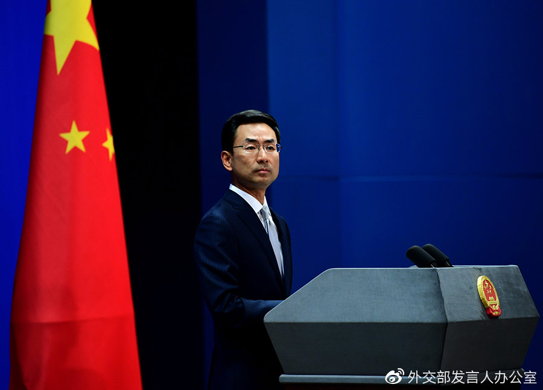

美将限制中方官员及家属赴美签证
耿爽：立即纠正错误 撤销有关决定

“外交部发言人办公室”消息，在10月9日外交部例行记者会上，有记者问：继10月7日美商务部宣布以所谓涉疆问题对28个中国实体实施出口限制之后，美国务院宣布将对“拘留”或“虐待”新疆穆斯林少数民族群体负有责任的中国党政官员及其家属实施签证限制。中方对此有何评论？
耿爽：昨天，中方已就美方以所谓涉疆人权问题为借口将28个中国实体列入美国出口管制实体清单向美方提出严正交涉，并表明了严正立场。我愿再次强调，新疆事务纯属中国内政，任何国家无权干涉。新疆也根本不存在美方指称的所谓人权问题。无论美方以何种借口在涉疆问题上对中方实体和人员实施何种限制，都严重违反国际关系基本准则，严重干涉中国内政，中方都坚决反对。
必须指出，新疆采取的反恐和去极端化举措，目的是从源头上预防极端主义和恐怖主义的滋生，完全符合中国法律，也符合国际实践。这些举措受到2500万新疆各族人民的广泛支持，也为国际反恐事业作出了积极贡献。美方罔顾事实，围绕涉疆问题对中国大肆诬蔑抹黑，为干涉中国内政蓄意制造借口，干扰新疆反恐努力，阻挠中国稳定发展，只会让中国人民和国际社会进一步认清他们的险恶用心。这些伎俩丝毫动摇不了中国政府和人民捍卫国家主权安全、维护社会发展稳定的坚定意志，完全是徒劳的。
我们奉劝美方立即纠正错误，撤销有关决定，停止干涉中国内政。中方将继续采取坚定有力措施，坚决维护国家主权、安全、发展利益。